Quinto elemento de la barra superior de herramientas. A continuación se muestra una imagen.

Ilustración 1. Menú Operaciones.
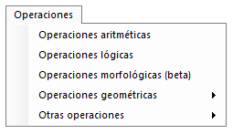
Dentro de este menú se puede encontrar operaciones aritméticas, lógicas, morfológicas, geométricas, entre otras. La imagen que se va a utilizar para realizar las pruebas es Lena.

Ilustración 2. Imagen original de Lena.


En este menú se puede realizar las operaciones básicas sobre una imagen, suma, resta, multiplicación y división. En la siguiente ilustración se muestra el menú correspondiente a Operaciones aritméticas.

Ilustración 3. Menú operaciones aritméticas.
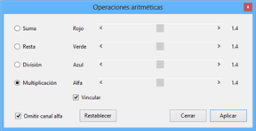

Como se puede observar, se dispone de 4 tipos de operaciones básicas. Además hay dos checkbox, uno de ellos para evitar que la operación afecte al canal alfa (Omitir canal alfa) y otro para vincular todas las barras de desplazamiento (Vincular).
Las operaciones se aplican píxel a píxel y canal a canal, así pues, en la imagen se ha seleccionado Multiplicación y 1.4 para cada canal, por lo tanto se multiplicará el valor de los tres canales RGB por 1.4.

Ilustración 4. Lena multiplicada.
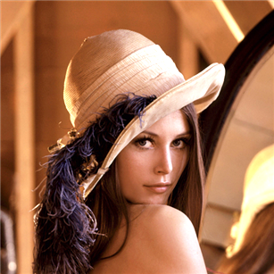

Tras la multiplicación puede observarse que la imagen se ha aclarado, ya que los valores han aumentado y están más cercanos a 255.
Dentro de este menú se encuentran las funciones lógicas principales para tratar píxel a píxel. Se incluyen las opciones AND, OR y XOR. En la siguiente ilustración se muestra el menú.

Ilustración 5. Menú operaciones lógicas.
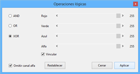

Dentro del menú existen dos checkbox, uno de ellos para evitar que la operación afecte al canal alfa (Omitir canal alfa) y otro para vincular todas las barras de desplazamiento (Vincular).
Las operaciones se aplican píxel a píxel y canal a canal, así pues, en la imagen se ha seleccionado XOR y 255 para cada canal, por lo tanto se aplicará la operación XOR entre el valor del canal RGB evaluado y el 255.

Ilustración 6. Lena operación XOR
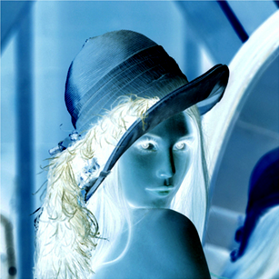

De la imagen anterior se saca la conclusión que realizar la operación XOR con 255 es lo mismo que realizar la inversión de colores sobre la imagen.
Este menú incluye una serie de operaciones básicas estadísticas para calcular diferentes tipos de medias, mediana, rango a través de una matriz de convolución (kernel).

Ilustración 7. Menú operaciones estadísticas.
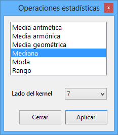

Como puede observarse en la anterior ilustración, en la parte superior aparece un listado con las diferentes operaciones a seleccionar y justo debajo una tripleta en la que poder seleccionar el ancho del kernel.
Si se aplica la mediana con lado de kernel 7, lo que se haciendo es evaluar grupos de 49 píxeles (7x7) y calcular la mediana para cada canal RGB de esos grupos, y el resultado asignarlo a los 49 píxeles.

Ilustración 8. Lena mediana (lado 7).
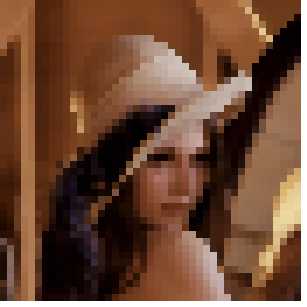

Una vez visto el resultado aplicado sobre la imagen Lena, queda mucho más claro cómo funcionan los kernels aplicando filtros estadísticos.
Dentro de este menú se encuentran las operaciones morfológicas básicas para aplicar en una imagen.
El formulario se compone de una serie de botones en la parte de la izquierda con las diferentes transformaciones morfológicas disponibles. Las transformaciones son: dilatación, erosión, apertura, cerradura, perímetro, top hat y bottom hat.

Ilustración 9. Menú operaciones morfológicas.
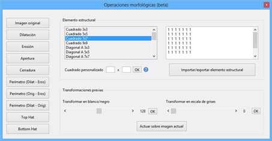

En superior izquierda se encuentra el tipo de elemento estructural que se quiere seleccionar para aplicar la transformación, pudiéndose escoger de 3 formas diferentes:

Ilustración 10. Menú para importar/exportar elementos estructurales
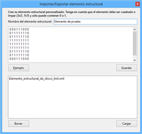

Finalmente, dentro de este menú se encuentran también dos opciones para convertir la imagen en blanco y negro o en escala de grises, y un botón en la parte inferior para aplicar la transformación morfológica sobre la imagen mostrada en Apolo en ese momento.
Las transformaciones morfológicas se basan en buscar valores máximos/mínimos dentro del elemento estructural, para así aumentar o disminuir las zonas y poder, entre otros, detectar perímetros.
A continuación se va a aplicar a una imagen de una matrícula, una operación morfológica para determinar el perímetro. La imagen original pasada a blanco y negro es la siguiente.

Ilustración 11. Imagen matrícula en blanco y negro.
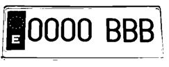

A esta imagen se le aplica (con un elemento estructural cuadrado de 3x3) la operación perímetro.

Ilustración 12. Imagen matrícula perímetro.
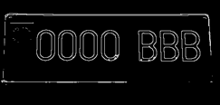

Como puede observarse en la ilustración anterior, ahora los números y letras de la matrícula están definidos de forma excelente por su contorno.
Una aplicación de este tipo de transformaciones es la detección de bordes y a partir de ella la detección de patrones.
Dentro de este menú se encuentran las principales operaciones geométricas para aplicar sobre una imagen (matriz).

Ilustración 13. Lena reflexión horizontal.
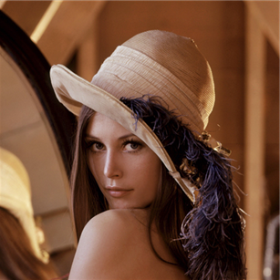

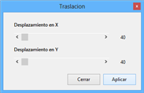


Ilustración 15.Menú volteados.
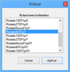

Los tipos de rotación son los siguientes:
RotateNoneFlipNone: indica que no hay ni giro en el sentido de las agujas del reloj ni volteo.
Rotate90FlipNone: indica un giro de 90 grados en el sentido de las agujas del reloj, sin volteo.
Rotate180FlipNone: indica un giro de 180 grados en el sentido de las agujas del reloj, sin volteo.
Rotate270FlipNone: indica un giro de 270 grados en el sentido de las agujas del reloj, sin volteo.
RotateNoneFlipX: indica que no hay un giro en el sentido de las agujas del reloj seguido de un volteo horizontal.
Rotate90FlipX: indica un giro de 90 grados en el sentido de las agujas del reloj, seguido de un volteo horizontal.
Rotate180FlipX: indica un giro de 180 grados en el sentido de las agujas del reloj, seguido de un volteo horizontal.
Rotate270FlipX: indica un giro de 270 grados en el sentido de las agujas del reloj, seguido de un volteo horizontal.
RotateNoneFlipY: indica que no hay un giro en el sentido de las agujas del reloj seguido de un volteo vertical.
Rotate90FlipY: indica un giro de 90 grados en el sentido de las agujas del reloj, seguido de un volteo vertical.
Rotate180FlipY: indica un giro de 180 grados en el sentido de las agujas del reloj, seguido de un volteo vertical.
Rotate270FlipY: indica un giro de 270 grados en el sentido de las agujas del reloj, seguido de un volteo vertical.
RotateNoneFlipXY: indica que no hay giro en el sentido de las agujas del reloj seguido de un volteo horizontal y vertical.
Rotate90FlipXY: indica un giro de 90 grados en el sentido de las agujas del reloj, seguido de un volteo horizontal y vertical.
Rotate180FlipXY: indica un giro de 180 grados en el sentido de las agujas del reloj, seguido de un volteo horizontal y vertical.
Rotate270FlipXY: indica un giro de 270 grados en el sentido de las agujas del reloj, seguido de un volteo horizontal y vertical.

Ilustración 16. Lena volteo

En la anterior imagen se muestra un volteo Rotate90FlipY.
Una transformación afín consiste en girar, escalar y trasladar una matriz. En Apolo hay dos opciones disponibles, una manual y otra automática (personalizada).
En la opción manual hay que rellanar los datos con los valores elegidos. Los datos son, giro (en grados), escalado (en x e y), traslación (en x e y) y por último el tamaño de la imagen. Además hay posibilidad de seleccionar el modo Matrix o Drawimagen, teniendo ambos resultados equivalentes.

Ilustración 17. Menú transformación afín manual.
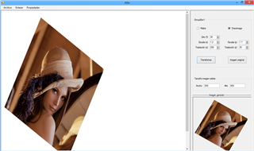

Como se puede observar en la anterior imagen, se ha aplicado a la imagen de Lena un giro de 30º, escalado 1.2 en x y 1.7 en y, y una traslación de 200 en x y 30 en y.
En la opción personalizada hay que seleccionar 4 coordenadas de origen y cuatro de salida, y de esta manera se ajusta automáticamente la imagen para que las coordenadas de entrada pasen a ser las de salida.

Ilustración 18. Menú transformación afín automática.
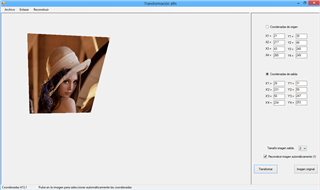

Tras una transformación de este tipo, la imagen queda resquebrajada, tal y como se observa en la siguiente ilustración.

Ilustración 19. Imagen de Lena tras transformación afín.
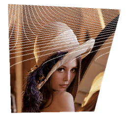

La imagen se puede reconstruir activando el checkbox Reconstruir imagen automáticamente o desde el menú Resconstruir>Reconstruir imagen. Esta transformación interpola el píxel a partir de los valores más próximos, pudiendo seleccionar el número de píxeles para realizar la interpolación (Reconstruir>Propiedades).

Ilustración 20. Lena reconstruida.
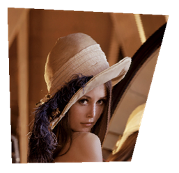

Como puede observarse, tras la reconstrucción apenas se nota la diferencia.
Esta función es una de las formas más simples de segmentación. El método consiste en pasar la imagen a escala de grises e ii asignando por rangos, diferentes colores. Por ejemplo, para los valores de 0 a 50, el color rojo, de 51 a 100 el verde, etc. Hay dos métodos disponibles, uno automático y otro manual.
El método automático consiste en seleccionar el número de divisiones y los colores que se quieren asignar a cada división. Estas divisiones las calculará Apolo para que sean todas con el mismo valor o muy aproximado.

Ilustración 21. Menú densisty slicing automático.
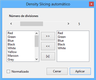

Como puede observarse hay un checkbox para marcar denominado Normalizado. Si se activa esta opción, Apolo busca el menor y el mayor valor de gris y hace las divisiones entre esos dos valores en vez de entre 0 y 255. Se puede deducir que si la imagen ocupa todo el rango de grises, la versión normal y normalizada serán iguales.

Ilustración 22. Lena densisty slicing automático.
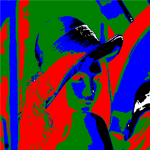

En la imagen anterior se muestra a Lena después de aplicar la función density slicing con 5 colores (rojo, azul, verde, negro y blanco).
La opción densisty slicing manual, es similar a la anterior a diferencia de que es el propio usuario quien decide el rango de cada división. Por ejemplo, se pueden seleccionar 3 divisiones y a la primera asignar el rango de 0 a 10, a la segunda de 11 a 250 y a la tercera de 251 a 255.

Ilustración 23. Menú densisty slicing manual.
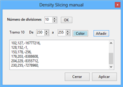

Además, este menú permite seleccionar una mayor gama de colores mostrando un cuadro de diálogo con la opción de crear colores personalizados.

Ilustración 24. Lena density slicing manual.
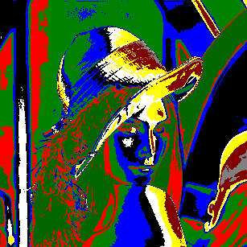

En la imagen anterior se muestra a Lena después de una transformación con 10 divisiones.
Created with the Personal Edition of HelpNDoc: Free PDF documentation generator